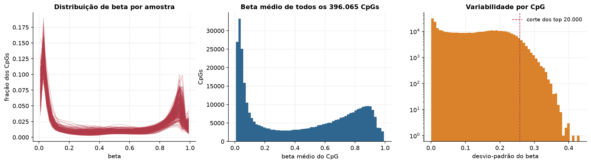
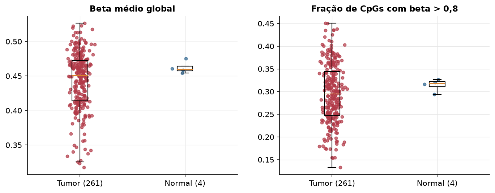
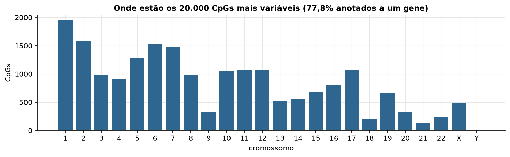
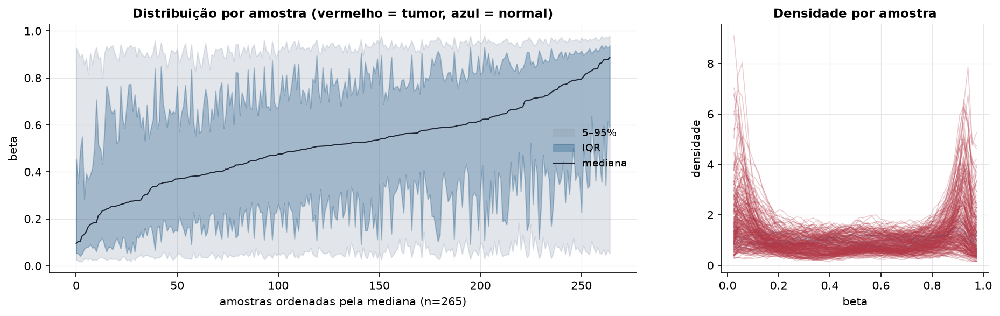
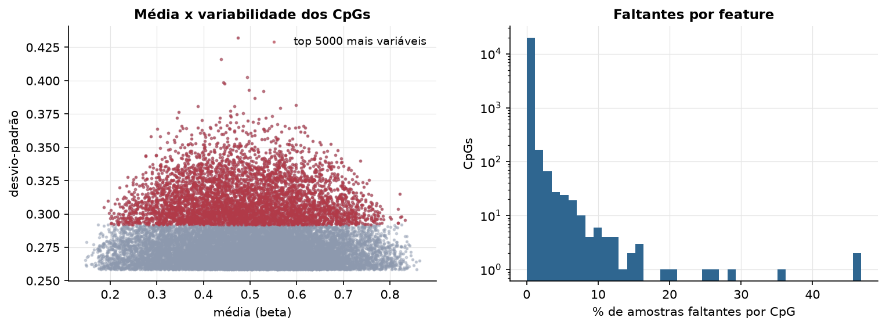
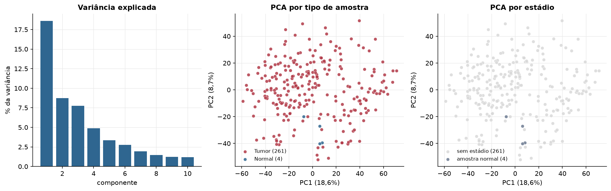
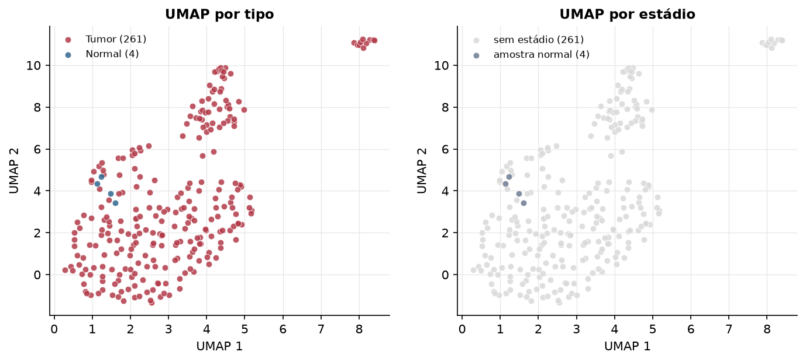
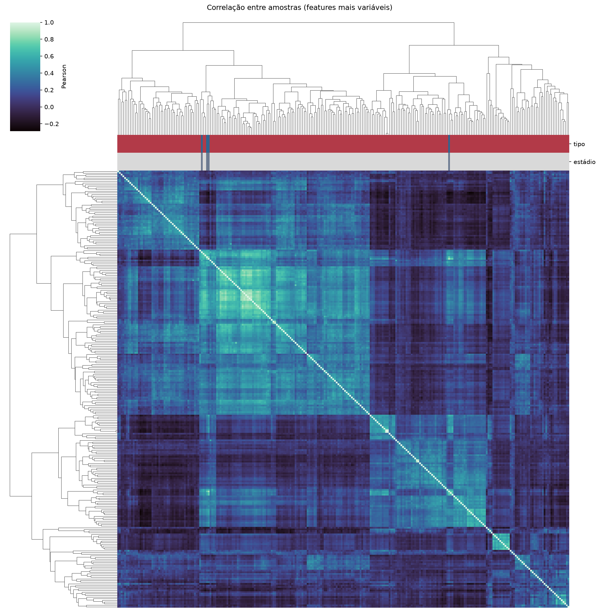
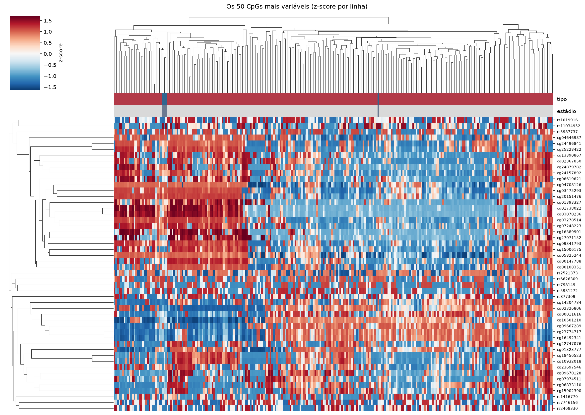
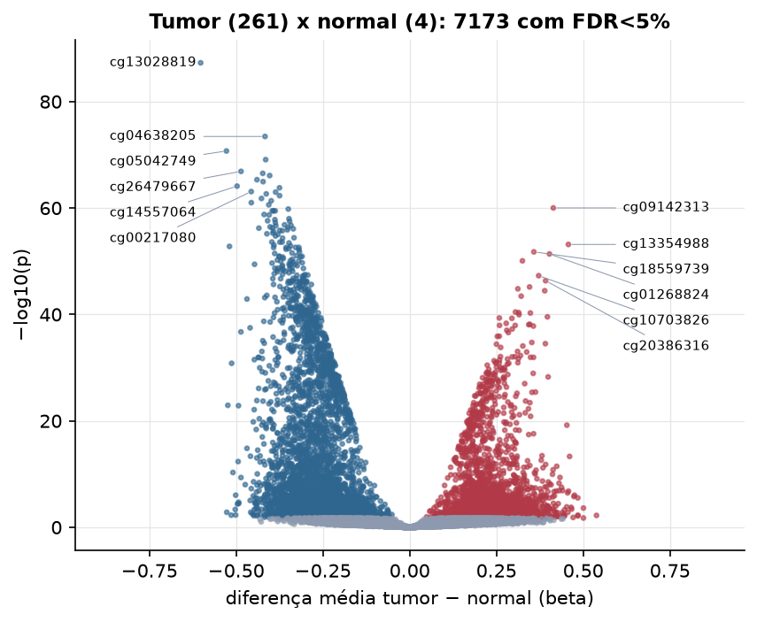

SARC · Metilação do DNA (450k)
Illumina Infinium HumanMethylation450, valores beta (0 a 1) · gerado em 22/10/2026 03:57
396.065CpGs medidos
374.825CpGs sem faltante
20.000CpGs
261amostras tumorais
4amostras normais
0,1%valores faltantes
Fonte: PanCanAtlas HM450 via API do Xena
O array tem ~485 mil CpGs. Para não ocupar espaço, guardamos estatísticas de todos os CpGs e só os 20.000 mais variáveis para PCA, UMAP e heatmaps.
Principais resultados
- A distribuição de beta é bimodal: a maioria dos CpGs está quase toda desmetilada (perto de 0, típico de ilhas CpG em promotores) ou quase toda metilada (perto de 1, corpo gênico e regiões intergênicas). 40,7% dos CpGs têm beta médio intermediário (0,2 a 0,8).
- Beta médio global: 0,451 nos tumores e 0,460 nos normais (hipometilação global no tumor, como é comum em câncer).
- 20.000 CpGs medidos em 265 amostras (261 tumorais e 4 normais); 0,1% dos valores estão faltando.
- Os dois primeiros componentes principais explicam 18,6% e 8,7% da variância das features mais variáveis.
- Correlação mediana entre amostras: 0,13.
- Tumor x normal: 7173 CpGs diferentes com FDR < 5% (2733 maiores no tumor, 4440 maiores no normal; 4 pacientes têm o par tumor-normal).
- Mais aumentados no tumor: cg09142313, cg13354988, cg18559739, cg01268824, cg17922359, cg10703826, cg20386316, cg07652237.
- Mais reduzidos no tumor: cg13028819, cg04638205, cg05042749, cg12311175, cg26479667, cg07834841, cg27468419, cg15244965.
- Associações clínicas com p < 0,05 nos componentes principais: PC1 com sexo (p=0.0012); PC3 com sexo (p=5.2e-05); PC2 com idade (p=4e-07); PC2 com sobrevida (p=2.4e-05); PC3 com sobrevida (p=0.00033).
Distribuição global



Exploração dos CpGs mais variáveis
Distribuição dos valores


Estrutura das amostras




Tumor x normal

Features mais diferentes entre tumor e normal
| diferenca_tumor_menos_normal | t | p | fdr | |
|---|---|---|---|---|
| cg13028819 | -0.602 | -34.166 | 5.27e-88 | 1.05e-83 |
| cg04638205 | -0.417 | -25.874 | 3.62e-74 | 3.62e-70 |
| cg05042749 | -0.528 | -27.269 | 1.95e-71 | 1.3e-67 |
| cg12311175 | -0.415 | -24.552 | 8.19e-70 | 4.09e-66 |
| cg26479667 | -0.486 | -23.864 | 1.31e-67 | 5.25e-64 |
| cg07834841 | -0.423 | -23.711 | 3.09e-67 | 1.03e-63 |
| cg27468419 | -0.403 | -23.66 | 8.05e-67 | 2.3e-63 |
| cg15244965 | -0.44 | -23.403 | 4.84e-66 | 1.21e-62 |
| cg21908129 | -0.422 | -24.496 | 1.11e-65 | 2.47e-62 |
| cg14557064 | -0.497 | -25.483 | 7.85e-65 | 1.57e-61 |
| cg05533037 | -0.375 | -23.061 | 1.6e-64 | 2.91e-61 |
| cg00217080 | -0.457 | -22.726 | 8.19e-64 | 1.37e-60 |
| cg04414975 | -0.386 | -22.982 | 1.04e-63 | 1.6e-60 |
| cg18099070 | -0.413 | -22.547 | 2.21e-63 | 3.15e-60 |
| cg17946266 | -0.375 | -22.651 | 4.84e-63 | 6.46e-60 |
| cg00202568 | -0.427 | -25.476 | 1.62e-62 | 2.03e-59 |
| cg12889126 | -0.399 | -23.713 | 4.39e-62 | 5.16e-59 |
| cg18080819 | -0.456 | -22.902 | 9.98e-62 | 1.11e-58 |
| cg11854928 | -0.406 | -21.983 | 2.51e-61 | 2.64e-58 |
| cg09142313 | 0.414 | 22.008 | 9.7e-61 | 9.69e-58 |
| cg23248615 | -0.35 | -21.696 | 1.58e-60 | 1.51e-57 |
| cg13608273 | -0.396 | -22.312 | 3.32e-60 | 2.87e-57 |
| cg08540622 | -0.387 | -23.284 | 3.4e-60 | 2.87e-57 |
| cg12802844 | -0.392 | -21.812 | 3.45e-60 | 2.87e-57 |
| cg17151621 | -0.419 | -21.629 | 1.67e-59 | 1.34e-56 |
| cg13679164 | -0.405 | -22.855 | 2.01e-59 | 1.55e-56 |
| cg00938547 | -0.348 | -21.42 | 1.01e-58 | 7.49e-56 |
| cg06966242 | -0.388 | -21.348 | 1.56e-58 | 1.11e-55 |
| cg07877987 | -0.409 | -21.073 | 2.5e-58 | 1.73e-55 |
| cg12342451 | -0.346 | -21.022 | 3.25e-58 | 2.16e-55 |
Associação com variáveis clínicas
p-valores da associação dos três primeiros componentes principais (só tumores) com estádio (Kruskal-Wallis), sexo (Mann-Whitney), idade (Spearman) e sobrevida global (Cox univariado).
| estádio (Kruskal) | sexo (Mann-Whitney) | idade (Spearman) | sobrevida OS (Cox) | |
|---|---|---|---|---|
| PC1 (18,7%) | 0.001 | 0.068 | 0.68 | |
| PC2 (8,5%) | 0.946 | 4.04e-07 | 2.42e-05 | |
| PC3 (7,8%) | 5.21e-05 | 0.113 | 0.000333 |